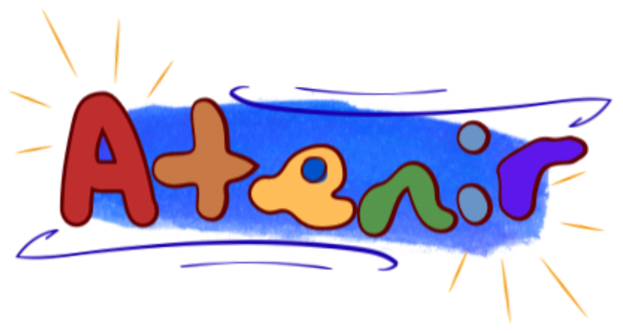

Berrette
Morbide, con il risvolto a coste e il pompon se lo vuoi. Lana calda per l'inverno, cotone per le mezze stagioni.
Fai la tua berretta
InstagramBerrette, sciarpotti e borsette che nascono uno per uno, nei colori che scegli tu. Niente magazzino: ogni pezzo è fatto per chi lo indossa.
Ogni pezzo prende il colore di una lettera del logo. Poi puoi cambiarlo come vuoi.
Morbide, con il risvolto a coste e il pompon se lo vuoi. Lana calda per l'inverno, cotone per le mezze stagioni.
Fai la tua berrettaGrandi, avvolgenti, con le frange. Uno di quelli che ti tieni addosso anche in casa.
Fai il tuo sciarpottoPiccole e resistenti, con il manico intrecciato e il bottone. Ci stanno telefono, chiavi e poco altro: il giusto.
Fai la tua borsettaProva le combinazioni qui sotto. Quando ti piace, mandami la richiesta: il messaggio è già scritto.
Berretta · Rosso papavero
Pezzo e colore qui sopra, oppure prendi spunto dai lavori su Instagram.
In messaggio privato ci accordiamo su misura, filato, prezzo e tempi.
Lo lavoro a mano e te lo spedisco, oppure ci vediamo per la consegna.
Ho iniziato con un gomitolo e un tutorial, e non ho più smesso. Atenir è il mio piccolo laboratorio: ogni lettera del logo ha un colore diverso, come i gomitoli sparsi sulla mia scrivania.
Lavoro da sola e su ordinazione, quindi ogni pezzo è un po' diverso dall'altro. È proprio questo il bello.
Su Instagram e TikTok trovi i pezzi appena finiti, i colori nuovi e i video dei punti.